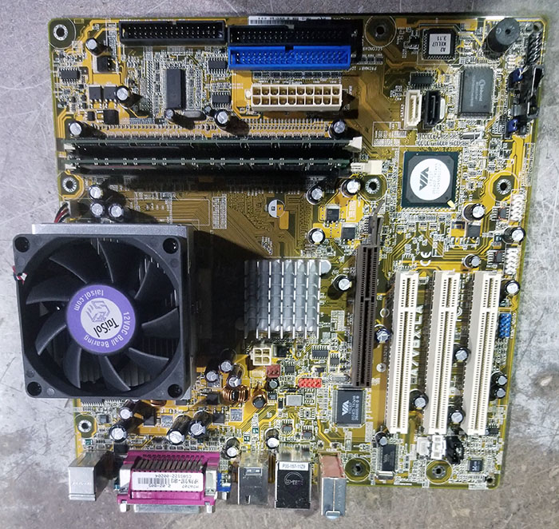
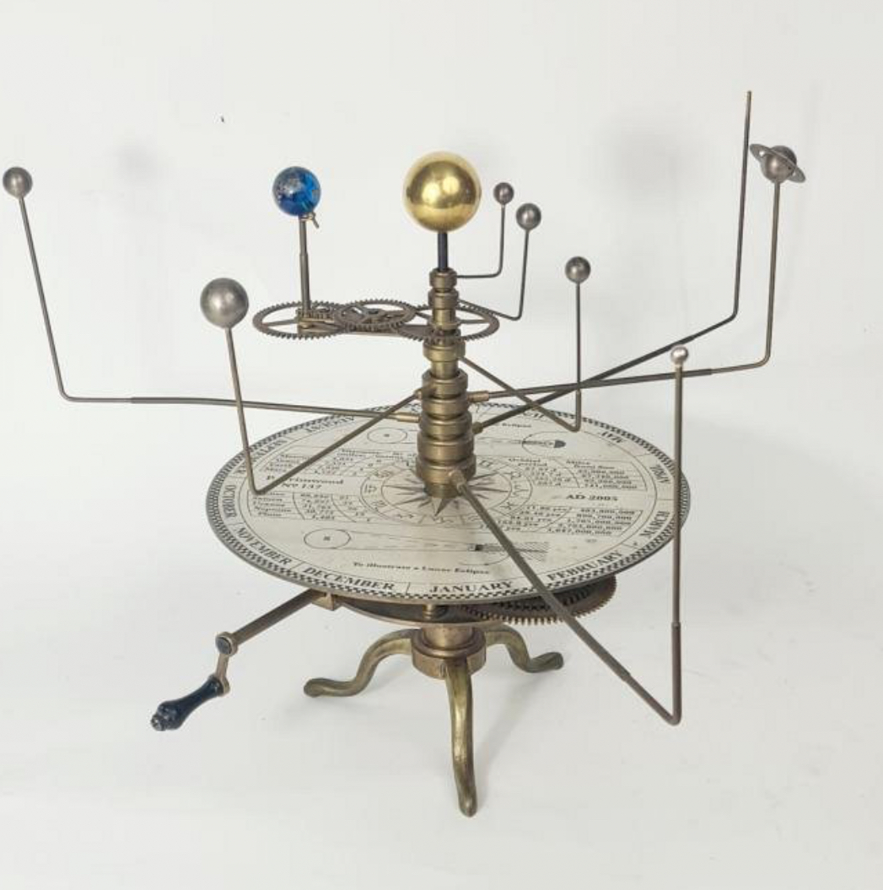
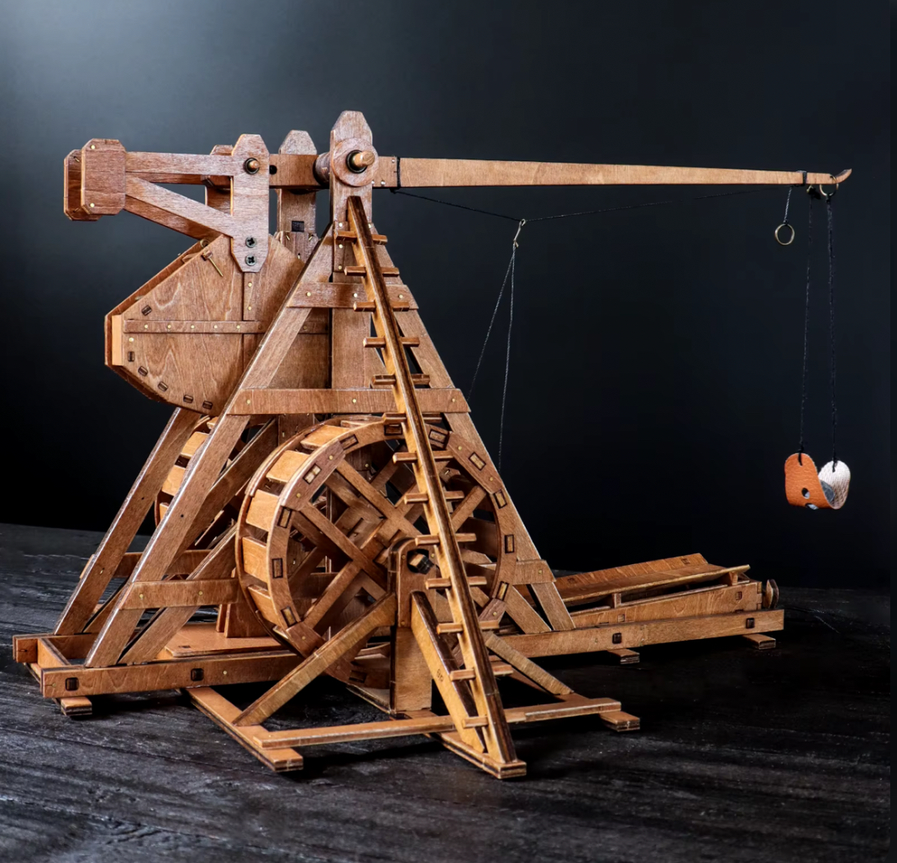

Project 1
Project 1 was where we were put in a group of four with a realistic budget. With that budget we were to buy compatible PC parts and assemble it. After doing so we ran a bench mark test and debated with other groups on who had a better build. This was one of my favorite projects because it was hands on.

Project 2
Project 2 was my very first, this project was done with my friend from the 5th grade for the science fair. During this project i learned a lot about volcanos like how they form, erupt, and more. I really enjoyed this because it was also my first time participating in an event.

Project 3
Project 3 was was to create a scale mode of the solar system. This was my least favorite because it involed a lot of space, time and meterials to make. My least favorite part was finding meterials to create the planets while i was dorming.

Project 4
Project 4 was for hisotry class, this project allowed us to understand the mechinery of the medevile ages. During this project we were to build replica catapults. This was very fun and informative it taught us how poweful and advanced ancient machines were.